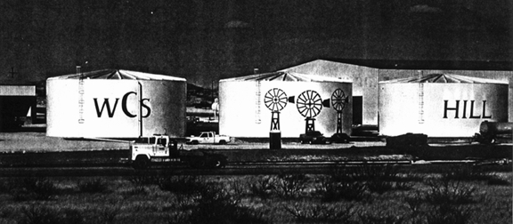
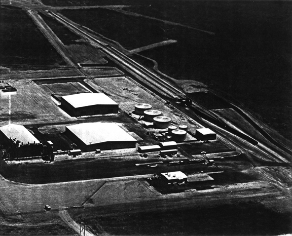
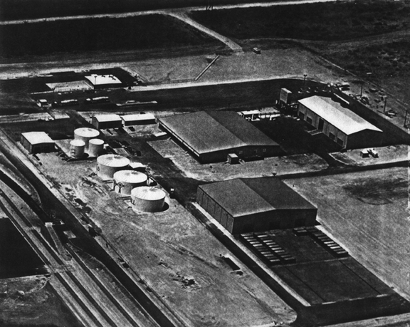
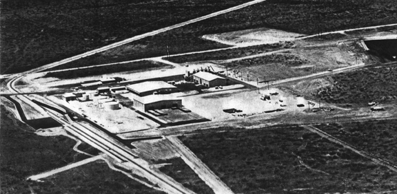
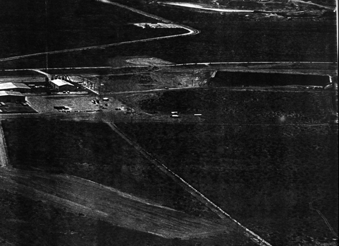
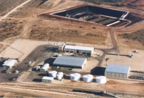
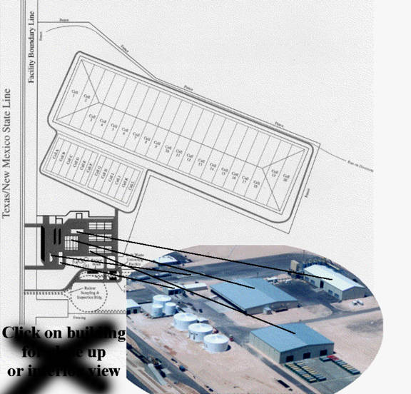

 These drums are what you see a mile away from Highway 176.
Note WCS's branding of the locale to "WCS Hill" to
disassociate the region from the original water-oriented
"Windmill Hill" name.

This aerial photo is from the northwest.
Hwy 176 is off to the right out of view.
The tower at the bottom edge is for power lines along the road and state line.
This is the main entrance to the site, where the road leads to the chain link fence.
 This is an close-up aerial view from the southeast.
You can see the drums in front as in the first picture,
with a railcar offloading area in front of that (far left).
On the right outside of the building, rows of 18-wheeler trailer-boxes can be seen lined up.
 Zooming out a bit, this aerial view is also from the southeast.
To the north (top-right edge) the hazardous waste landfill can be seen.
The road at the top of the photo extends toward Baker Spring.
 Zooming out even further and panning to the right, this photo gives a view of the hazardous waste disposal pit.
The bottom half on the left has what appears to be an airfield, confirming what we have heard in our investigations.
 This photo is from WCS's old website. Disposal pit in full view.
 This poor quality diagramme is also from the WCS website.